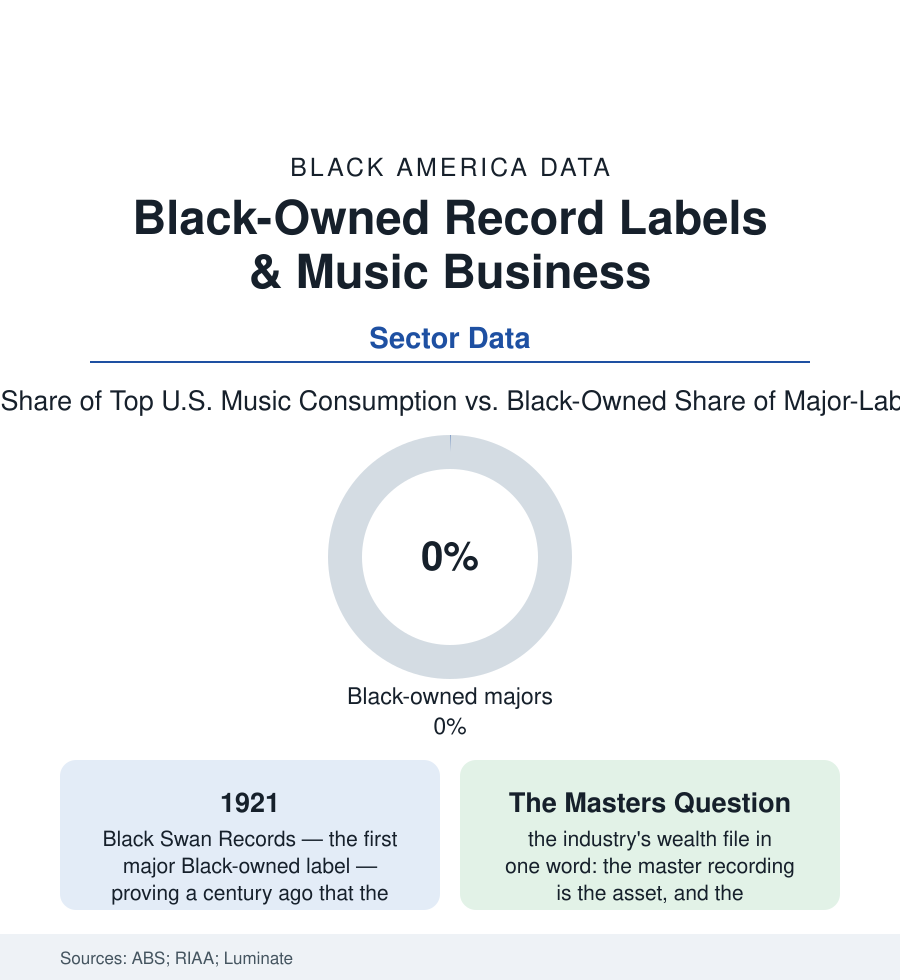

Black Business
Owning the Masters: Black Record Labels From Black Swan to the Streaming Era
Black artists built American music while owning almost none of its industry — the label file, from 1921's Black Swan Records through Motown's sale to the independent streaming era.

The oldest sentence in the American music business is an ownership sentence: the music is Black, the money mostly isn't. Black performers and writers have driven the industry's product for a century — the consumption data still show Black artists' genres at the center of American listening — while the labels that record, own, and license the masters have remained, with storied exceptions, in other hands. This article reads the label file: the exceptions, the economics, and the streaming era's reshuffle.
The Century of Exceptions
The exceptions are the industry's honor roll, and each teaches the same mechanics: Black Swan Records (1921 — Harry Pace's label, Ethel Waters its star — proving Black ownership viable the moment Black buying power got a label of its own, and dead within three years when the majors moved to crush and absorb the 'race records' market it revealed); Duke Ellington's and others' publishing footholds; the independent era's Black labels (Vee-Jay of Chicago — for a moment a major by any measure, the Beatles' first American label by a licensing accident of empire; Duke-Peacock of Houston; the Hi and Stax partnerships of Memphis — Stax's collapse in the distribution deal's fine print the era's canonical lesson: the label that doesn't own its distribution rents its life); and the summit, Motown — Berry Gordy's vertically integrated empire, the best-selling Black-owned company in America in its era, Hitsville's catalog and publishing the asset base — sold in 1988 in the transaction that still frames the debate (the price a fraction of the catalog's later value in the streaming era's appraisals — the masters question asked and answered across thirty years of compounding). The hip-hop era rebuilt the form at new scale (the independent label as the genre's native structure — Sugar Hill, Def Jam's distribution deal with a major as the template's modern form, Cash Money's famously renegotiated distribution-only deal as the ownership bar raised: the label keeping its masters and renting the major's plumbing — the deal structure itself the measure of progress in the trade data, from ownership-of-nothing to ownership-with-distribution across fifty years of contracts).
The Streaming Era's Ledger
The current data redraw the map again: streaming collapsed the distribution moat (the independent release reaching every platform without a pressing plant or a truck — the barriers whose ownership decided the earlier file now rented as a service), the consumption crown consolidated (hip-hop and R&B the most-streamed genres in Luminate's American data for years running — the product more Black than ever), and the ownership rows splitting in two directions at once — the independent sector's genuine democratization (the distributor-services firms, the artist-owned imprint as the standard ambition, the catalog funds' billions pricing the masters of the Black catalog at valuations their creators' estates sometimes share and sometimes read about) against the executive suite's stubborn census (the industry diversity studies counting Black executives in the low single digits at the major groups' top tiers — the Black Music Action Coalition's report cards an annual public grading — the product's makers and the industry's governors still two different populations). The survey counts of Black-owned labels and music firms in the Census business data remain, against the music's cultural weight, a rounding error — the sector where the distance between making the thing America sells and owning the selling of it is measured most precisely, in royalty statements. The frontier rows point at the asset itself: the masters-buyback funds, the estate-management firms professionalizing the legacy catalogs, the publishing-administration independents — the ownership being assembled, a catalog at a time, a century after Black Swan pressed its first disc in a Harlem office and proved the only question was ever the distribution.
Reading the Music Data
A century of the world's most valuable popular music, and the ownership column still reads like an error the industry corrects at its own pace: the label file is the business section's cultural bottom line — creativity was never the scarce input; the scarce inputs were the plant, the trucks, the contract, and the master. Streaming dissolved two of the four. The data on the remaining two is this generation's negotiation, conducted in public, at last, by artists who grew up reading Motown's sale price as a cautionary tale.
More in Black Business
Black-Owned Businesses: Counts, Receipts, and the Representation Gap
About 161,000 Black-owned employer firms and three million solo ventures: how the Census Bureau counts Black business ownership, where firms concentrate, and the gap between population share and business share.
Black Median Net Worth: The Wealth Gap in Federal Reserve Data
The Federal Reserve puts Black median family net worth at $44,900, against $285,000 for White families — about 16 cents on the dollar. The widest gap in economic data.
Black Buying Power: The $1.8 Trillion Consumer Economy
Black buying power is estimated at about $1.8 trillion — larger than the economy of most nations. What the figure measures, who produces it, and what it buys.
Source: U.S. Census Bureau Annual Business Survey; Recording Industry Association of America revenue data; Luminate music consumption reports; Black Music Action Coalition industry studies.